Define Dataset Search Criteria
Before searching, define what matters most for your use case. Consider the required modality, task, license, release year, and object classes. In this example, we are looking for a recent object-detection dataset with a clearly specified license.
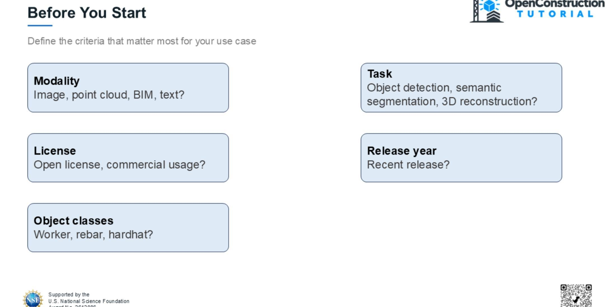
Enter Keywords in the Homepage Search
From the OpenConstruction homepage, enter a task or topic such as object detection. The search returns candidate resources related to those keywords.
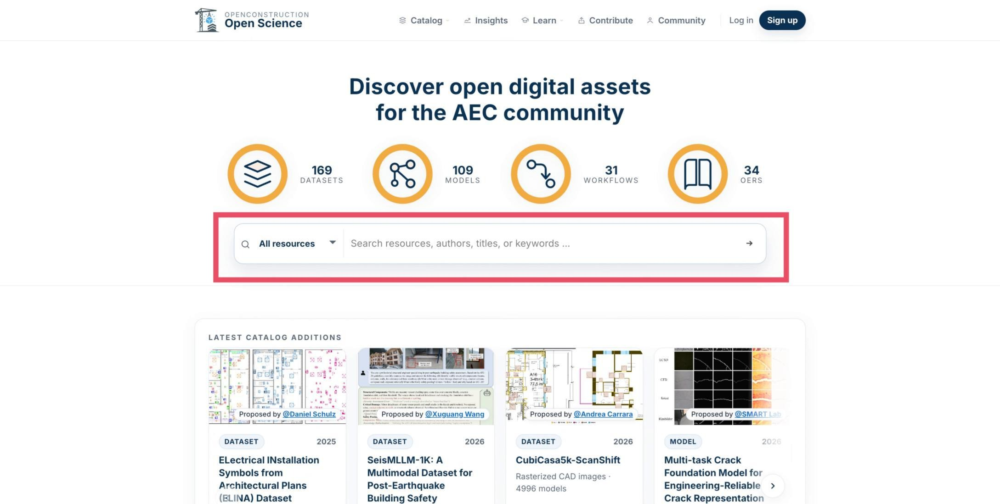
Open the Dataset Catalog
You can also go directly to the Dataset Catalog. Open the Catalog menu and select Datasets.
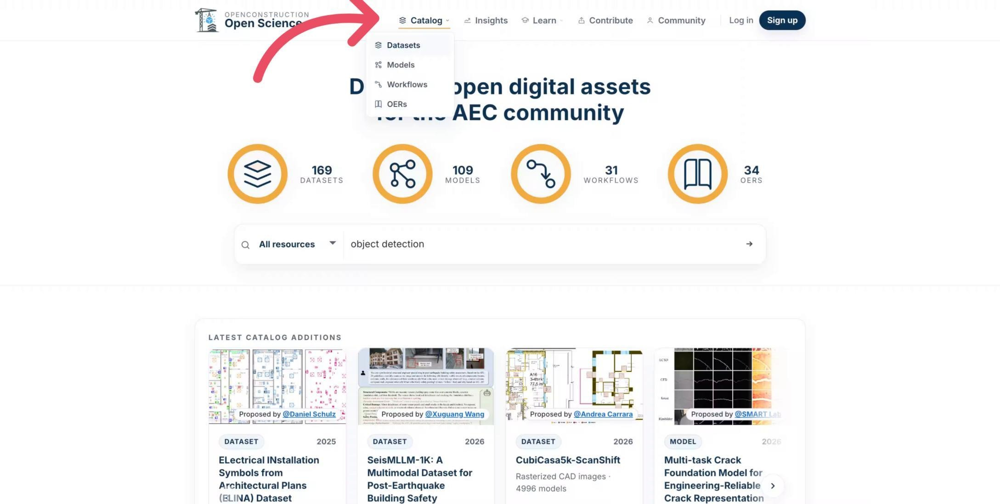
Use the Dataset Count Shortcut
As another entry point, select the homepage indicator showing the number of available datasets to open the full dataset catalog.
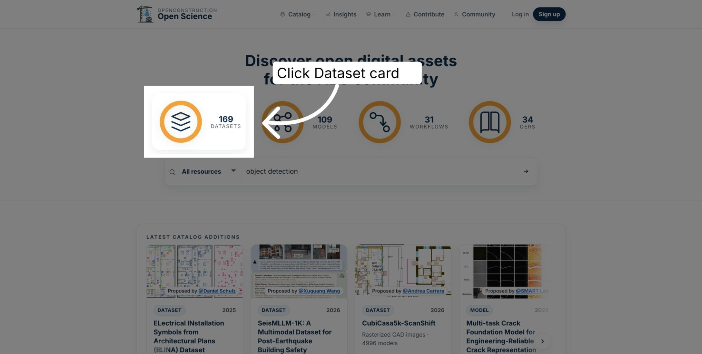
Start with a Simple Search
The Dataset Catalog provides search, filter, and sorting controls. Begin with a simple task description, such as object detection.
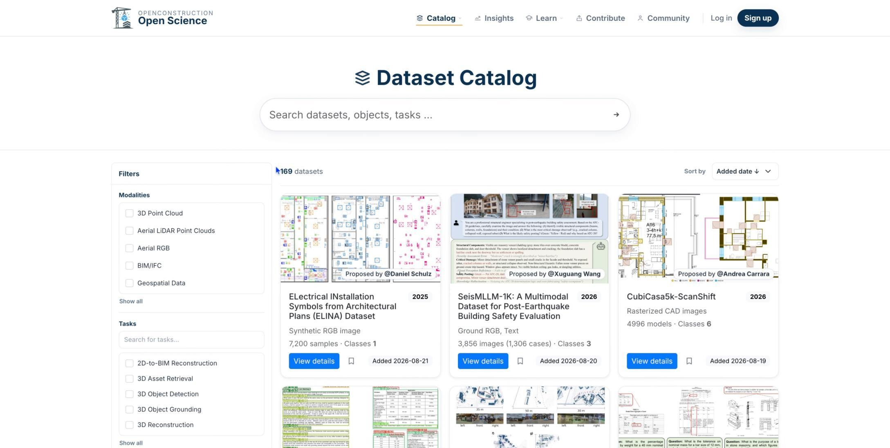
Search by Name, Class, or Term
Search using a dataset name, task, object class, or another related term. Use the language most closely associated with your intended application.
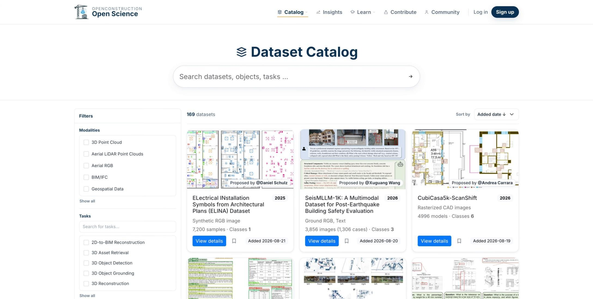
Run the Search
After entering your terms, select the search action to query the OpenConstruction catalog.
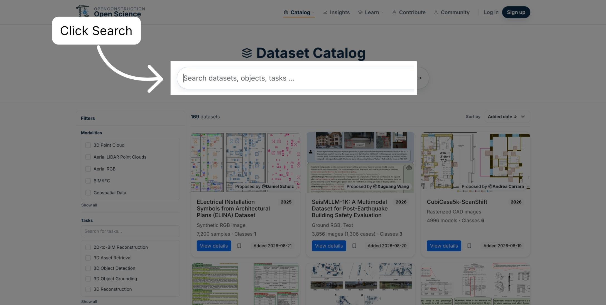
Search for Object Detection
For this example, enter object detection and press Enter or use the search action.
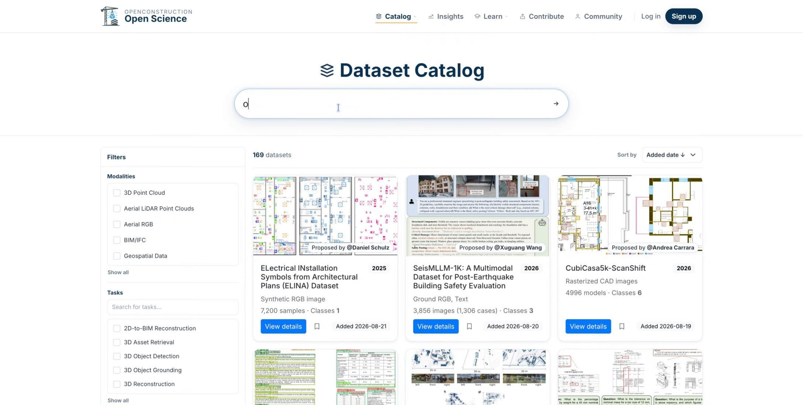
Review Candidate Datasets
The catalog returns candidate datasets matching the search. Review the initial results, then use filters to narrow the list.
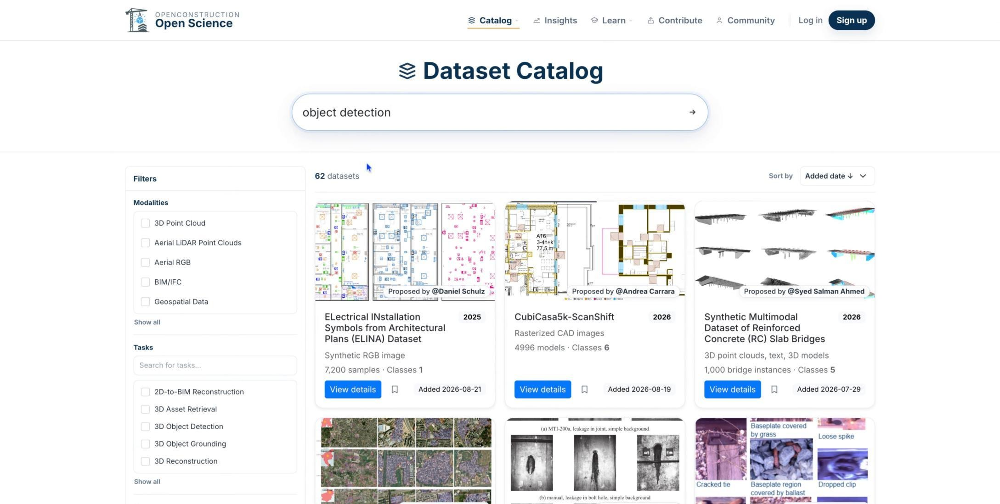
Use the Filter Panel
Refine the results by modality, task, license, release year, and object class. Combine only the criteria necessary for your use case.
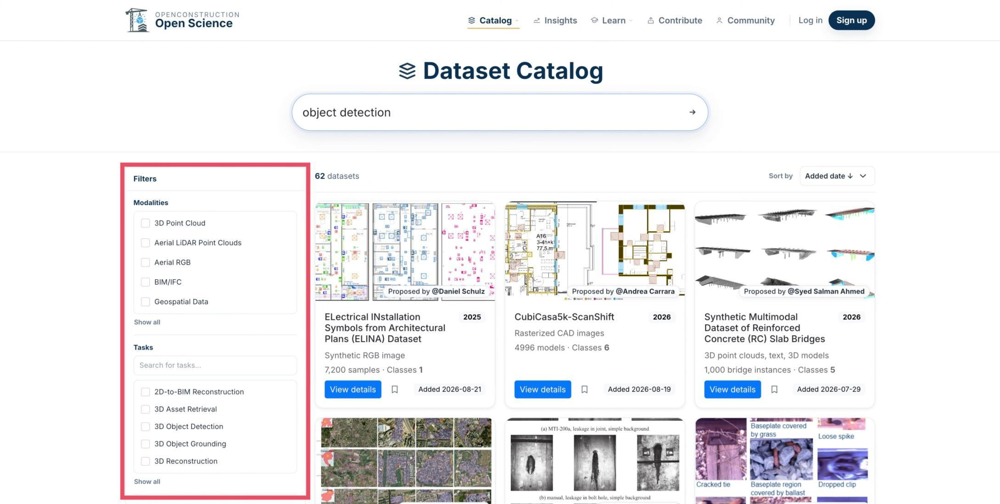
Filter by Modality
Select the data type you need, such as 3D point clouds or aerial RGB imagery, to exclude incompatible datasets.
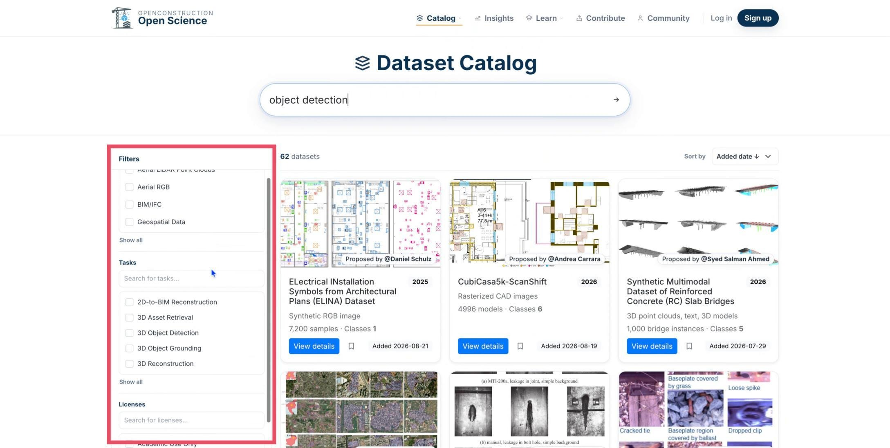
Filter by Task and License
Next, narrow the results by task and license. Review the license terms carefully to confirm that the permitted use aligns with your project.
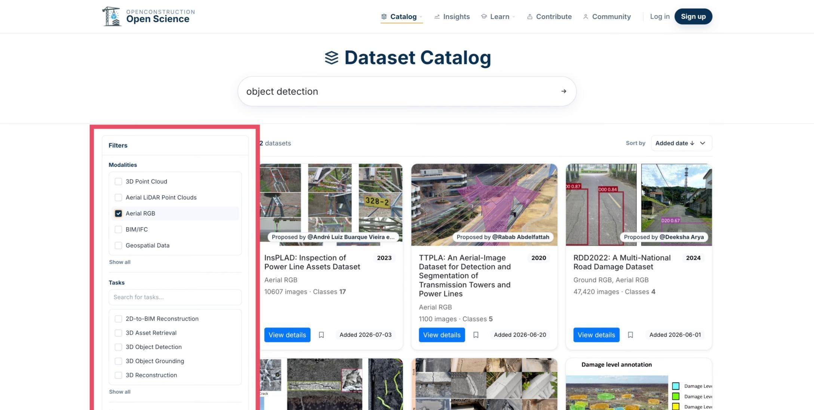
Assess the Filter Impact
Watch the result count as you apply filters. The changing count helps indicate whether the search is still too broad or has become too restrictive.
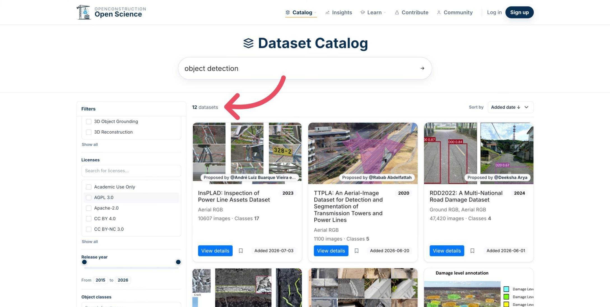
Sort the Remaining Results
Use Sort by to organize the remaining datasets by year, added date, name, sample count, or number of classes. To find a recent dataset, sort by year in descending order.
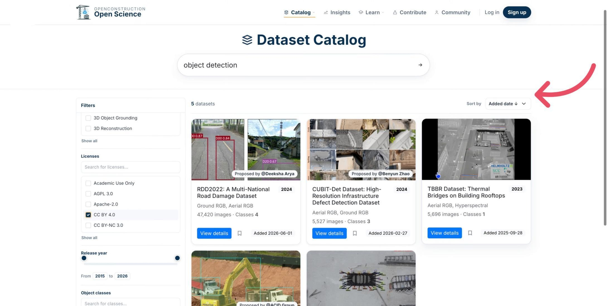
Open the Dataset Details
Select View details to inspect the complete record for a promising dataset.
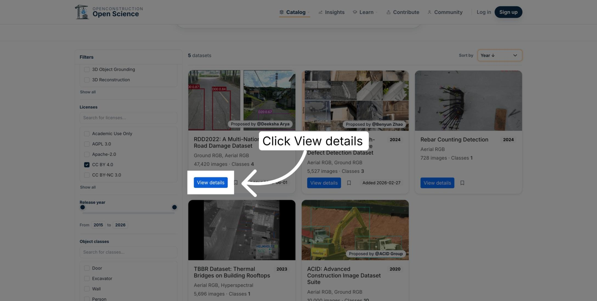
Verify the Dataset Information
Before deciding to use the dataset, confirm that its task, modality, license, release information, and original source align with your requirements. Follow the provider link to review the authoritative access and license terms.
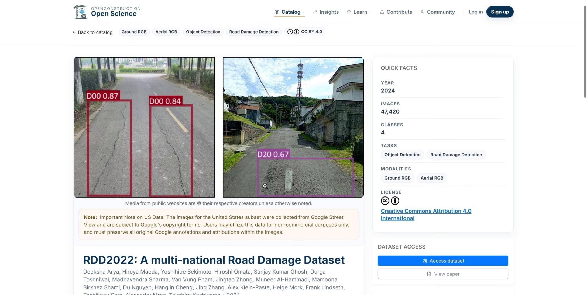
Return to the Catalog
If the dataset is not a good fit, return to the catalog and adjust the search terms or filters. Finding the right dataset is usually an iterative process.
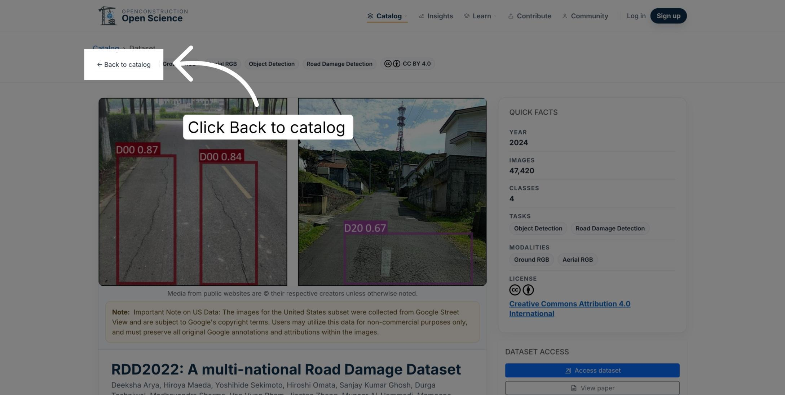
Refine the Search Iteratively
Search, filter, verify, and refine until you identify a strong candidate. This process moves you from a broad idea to a relevant dataset with clear supporting information.
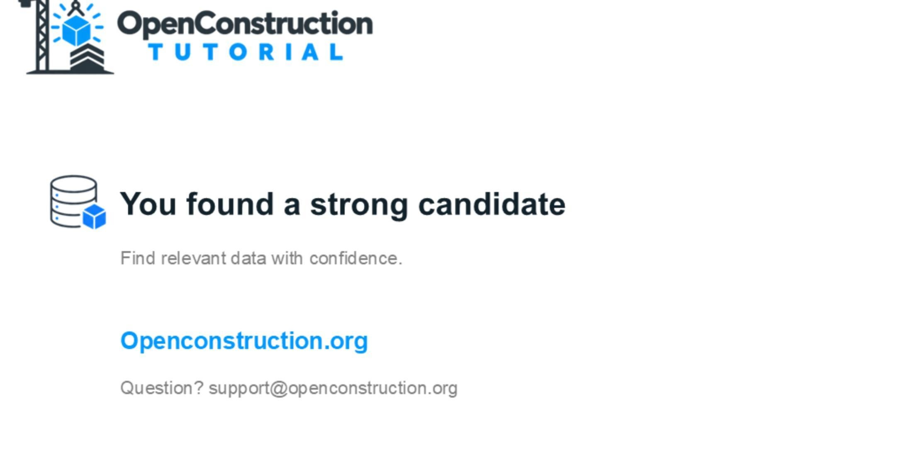
You are now ready to search the OpenConstruction dataset catalog with clear criteria and evaluate each candidate carefully.